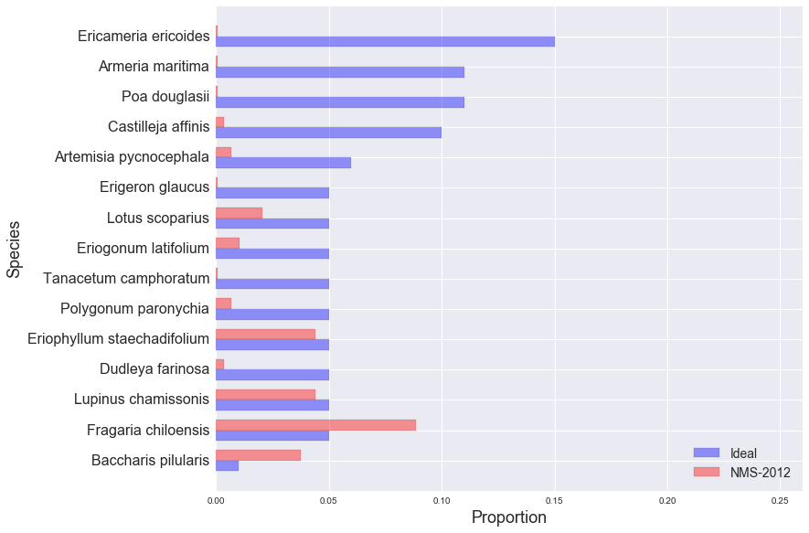

golden gate national parks conservancy: scrub mix
NMS-2012
EAPO-2011
NMS-2010
NMS-2011
NMS-2012
NUWO-2010
NUWO-2011
NUWO-2012
SUDU-2008
SUDU-2009
SUDU-2010
SUDU-2011
SUDU-2012
Ideal and Observed Scrub Mix, NMS-2012:
Other Species in NMS-2012 Sample:
| Species | Observed % |
|---|---|
| Lolium sp. | 10.20% |
| Bromus diandrus | 7.82% |
| Achillea millefolium | 4.76% |
| Briza maxima | 4.08% |
| Avena sp. | 3.40% |
| Polycarpon tetraphyllum | 3.06% |
| Madia sativa | 2.72% |
| Claytonia perfoliata | 2.72% |
| Anaphalis margaritacea | 2.38% |
| Bare ground | 2.38% |
| Scrophularia californica | 2.38% |
| Gnaphalium stramineum | 2.38% |
| Anthriscus cacaulis | 2.04% |
| Lupinus arboreus | 2.04% |
| Ehrharta erecta | 2.04% |
| Fumaria parviflora | 2.04% |
| Annual exotic grass | 1.36% |
| Artemisia californica | 1.36% |
| Medicago polymorpha | 1.36% |
| Carduus pycnocephalus | 1.02% |
| Erodium sp. | 1.02% |
| Rumex acetosella | 1.02% |
| Iris douglasiana | 0.68% |
| Satureja douglasii | 0.68% |
| Aster chilensis | 0.68% |
| Marah fabaceus | 0.68% |
| Ribes sanguineum | 0.68% |
| Heracleum lanatum | 0.68% |
| Leymus triticoides | 0.68% |
| Rumex pulcher | 0.34% |
| Mimulus aurantiacus | 0.34% |
| Sisyrinchium bellum | 0.34% |
| Rumex salicifolius | 0.34% |
| Polygonum arenastrum | 0.34% |
| Bromus carinatus ssp. maritimus | 0.34% |
| Rubus ursinus | 0.34% |
| Grindelia hirsutula | 0.34% |
| Gnaphalium luteoalbum | 0.34% |
| Raphanus sativus | 0.34% |
| Vulpia sp. | 0.34% |
| Ceanothus thrysiflorus | 0.34% |
| Hordeum marinum | 0.34% |
| Chenopodium califoricum | 0.34% |
| Solanum nigrum | 0.34% |